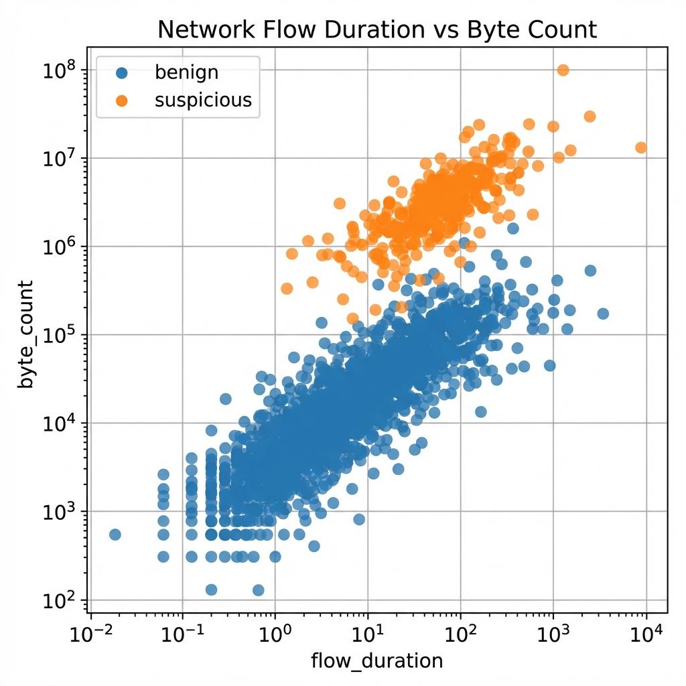

Python for AI & Data Handling
Course: Computer Systems Engineering
Module: Artificial Intelligence (EIARI4A)
Topic: The Data Science Stack (NumPy, Pandas, Visualization)
Topic: The Data Science Stack (NumPy, Pandas, Visualization)
Reading Time: ~60 Minutes
By the end of this chapter, you will be able to:
1. Explain why NumPy outperforms native Python using concepts like Vectorization and C-Contiguity.
2. Use NumPy broadcasting to perform complex matrix arithmetic without explicit loops.
3. Clean and aggregate structured datasets using Pandas DataFrames.
4. Apply the Split-Apply-Combine strategy to extract meaningful insights from raw log data.
5. Visualize multivariate relationships using Matplotlib and Seaborn to identify potential AI features.
6. Interpret plotted results to distinguish between benign and malicious network traffic.
As we transition from AI theory to practice, we must master the tools of the trade. This chapter is not just a syntax reference; it is a deep dive into the Data Science Stack. We will explore why standard Python is too slow for AI, how NumPy tricks the CPU into doing matrix math orders of magnitude faster, and how Pandas allows us to manipulate millions of records with the ease of a SQL query.
1. The Python Ecosystem for AI
Python is the lingua franca of AI, but not because it is fast. In fact, raw Python is famously slow compared to C++ or Rust. It wins because it acts as a "glue" language. When you run a command in PyTorch or NumPy, you are writing simple Python code, but triggering highly optimized C/C++/CUDA kernels that run on the metal of your CPU or GPU.
1.1 The Necessity of Virtual Environments
Before writing a single line of code, we must address the environment. AI libraries are heavy, complex, and updated frequently. A project built on TensorFlow 2.1 might break completely on TensorFlow 2.5.
If you install everything into your global Python environment, you will eventually encounter Dependency Conflicts—where Project A needs numpy 1.18 and Project B needs numpy 1.21, making it impossible to run both.
The Solution: Virtual Environments
A Virtual Environment (venv or conda) is a self-contained directory that contains a specific Python installation and a specific set of libraries. Every AI project should get its own environment.
This is the standard Python method. It is lightweight and comes pre-installed.
# 1. Create the environment
python -m venv my_env
# 2. Activate it
source my_env/bin/activate # Mac/Linux
my_env\Scripts\activate # Windows
# 3. Install Packages (using pip)
pip install numpy pandas matplotlib seaborn jupyter
# 4. Check installed packages
pip list
Recommended for Data Science as it handles non-Python dependencies (like CUDA for GPU) better.
# 1. Create the environment
conda create --name my_env python=3.9
# 2. Activate it
conda activate my_env
# 3. Install Packages (using conda)
conda install numpy pandas matplotlib seaborn jupyter
# 4. Check installed packages
conda list
1.2 Alternative: Google Colab
If you cannot set up a local environment, you can use Google Colab (colab.research.google.com). It is a free, browser-based Jupyter Notebook environment that runs in the cloud. It comes with Python, NumPy, Pandas, and PyTorch pre-installed.
-
Pros: No setup, free access to GPUs, easy sharing.
-
Cons: Requires internet, sessions time out after inactivity, difficult to use with local files.
1.3 Pythonic Thinking: List Comprehensions
In C or Java, you are trained to write loops. In Python, specifically for Data Science, explicit loops are often a "code smell" (an indicator of poor design). They are verbose and often slower.
The Old Way (Loop):
squares = []
for x in range(10):
squares.append(x**2)
The Pythonic Way (List Comprehension):
squares = [x**2 for x in range(10)]
This is not just syntactic sugar; it is often faster because the iteration logic is handled in C rather than Python byte-code.
2. Data Fundamentals
Tools like NumPy and Pandas are powerful engines, but an engine is useless without fuel. In the context of Artificial Intelligence, that fuel is Data. Before we learn to process it, we must first understand its fundamental nature and structure.
2.1 The Three Types of Data
Models treat numbers very different from words. To build effective systems, we must strictly categorize our variables into two primary families.
2.1.1 Numerical Data
This refers to quantitative metadata—things that can be measured or counted with arithmetic logic. Before feeding this into a model, we must distinguish between values that flow smoothly on a scale and values that jump in discrete steps. It comes in two flavors:
-
Continuous Data: This represents measurements with infinite precision. Examples include Temperature ($23.5^\circ C$), Height ($1.75m$), or Price ($R199.99$). In Python, these are typically stored as
float. -
Discrete Data: This represents whole-number counts that cannot be subdivided. You can have 3 Children or 5 Packets, but never "2.5 children". In Python, these are stored as
int.
2.1.2 Categorical Data
This refers to qualitative descriptors—labels that classify data into distinct groups or attributes (like "Color" or "City"), rather than measuring a quantity. It distinguishes the kind of thing something is, rather than how much of it exists.
-
Nominal Data: Categories with no inherent order. A car’s color can be Red, Blue, or Green, but Red is not "greater than" Blue.
-
Ordinal Data: Categories with a strict rank. A T-Shirt size of Large is definitively bigger than Medium, which is bigger than Small. Preserving this order during encoding is critical for the model to understand the relationship.
2.2 The Principle of "Garbage In, Garbage Out"
This is the golden rule of Machine Learning, handed down from the earliest days of computing. It states that the quality of your output is determined by the quality of your input, not just the sophistication of your algorithm. If you train a model on inconsistent or erroneous data, you will get a bad model, no matter how powerful your GPUs are or how complex your neural network architecture is. Common data quality issues include:
-
Missing Data: Sensors fail. Users skip questions. We must Impute (fill) or Drop these.
-
Outliers: Anomalies (like a house costing R100 Billion) will skew the model.
-
Normalization: Scales matter. "Age" (0-100) and "Salary" (0-1,000,000) must be scaled to the same range (0-1) so the model treats them equally.
3. NumPy: The Engine of AI
Standard Python lists are flexible—they can hold integers, strings, and objects in the same list. But this flexibility comes at a cost: memory and speed. Every element in a Python list is a full object with a pointer/reference.
NumPy (Numerical Python) introduces the ndarray. These are dense, fixed-type arrays (e.g., a block of 1,000,000 int32 numbers packed next to each other in memory).
3.1 Memory Layout & Performance
Because NumPy arrays are C-Contiguous (stored sequentially in RAM), the CPU can fetch them efficiently into its cache. More importantly, it allows for SIMD (Single Instruction, Multiple Data).
-
Scalar Math: "Load A, Load B, Add, Store". Repeat 1 million times.
-
Vector Math (SIMD): "Load 8 numbers from A, Load 8 from B, Add them all at once".
This is why NumPy is often 50x to 100x faster than pure Python loops. It leverages CPU vectorization and cache-friendly memory layouts to process data in blocks rather than individually.
3.2 Broadcasting rules
One of NumPy's most powerful (and confusing) features is Broadcasting. It allows you to perform arithmetic on arrays of different shapes, provided they are compatible.
The Rules:
1. If dimensions differ, left-pad the smaller shape with 1s.
2. If any dimension does not match, but one of them is equal to 1, stretch (broadcast) that dimension to match.
3. If dimensions don't match and neither is 1, raise an error.
Visualizing Broadcasting:
Imagine keeping a matrix of student scores (Shape: 100 students x 3 exams). You want to curve the grades by adding [5, 10, 0] points to the three exams respectively.
-
Matrix:
(100, 3) -
Update Vector:
(3,) -
NumPy implicitly stretches the Vector to
(100, 3)by repeating it 100 times, then adds them.
import numpy as np
scores = np.zeros((100, 3)) # 100 students, 3 exams
curve = np.array([5, 10, 0])
# Broadcasting involves no loops!
final_scores = scores + curve
3.3 Essential NumPy Operations
To harness the full power of NumPy, you must master the following five core pillars:
3.3.1 Array Creation
While np.array() converts existing lists, we rarely type data by hand in deep learning. Instead, we generate it.
3.3.1.1 Placeholders (zeros / ones)
When you build a Neural Network from scratch, you often need to initialize weights. np.zeros((3,3)) creates a 3x3 matrix of pure zeros (useful for biases), while np.ones((2,2)) creates a matrix of ones. This pre-allocates memory, which is faster than appending to a growing list.
# Create a 2x3 matrix of zeros
biases = np.zeros((2, 3))
# Create a 2x2 matrix of ones
mask = np.ones((2, 2))
3.3.1.2 Integer Sequences (arange)
np.arange(start, stop, step) is the list-generating cousin of Python's range(). Use this when you need disjoint integer steps, such as iterating over loop indices or creating time-steps for a discrete simulation.
# Generate even numbers from 0 to 18
steps = np.arange(0, 20, 2)
# Result: [ 0, 2, 4, 6, 8, 10, 12, 14, 16, 18]
3.3.1.3 Continuous Data (linspace)
This is the champion of plotting. Unlike arange (which steps by a fixed amount), np.linspace(start, stop, num_points) guarantees perfectly aligned data points. Use this when plotting smooth functions (like Sine waves) to ensure you have enough resolution.
# Generate 5,000 points between 0 and 1 for a smooth graph
x_axis = np.linspace(0, 1, 5000)
# Result: [0.0000, 0.0002, ... , 1.0000]
3.3.2 Inspection (Attributes)
In standard Python, you often have to print a list to guess its structure. In NumPy, the array object carries its metadata with it.
3.3.2.1 The Shape (.shape)
This is arguably the most important attribute. It returns a tuple representing the dimensions (e.g., (100, 3) means 100 rows, 3 columns). Deep Learning debugging is 90% checking if your matrix shapes match. If you try to multiply a (3, 4) matrix by a (5, 2) matrix, .shape is how you diagnose the error.
3.3.2.2 Data Type (.dtype)
Unlike Python lists which can hold integers and strings mixed together, NumPy arrays are homogeneous. .dtype tells you exactly what is inside (e.g., float32, int64, uint8). Knowing this is critical for memory management; an image storing pixels as float64 takes 8x more RAM than one using uint8.
3.3.2.3 Dimensions (.ndim)
This tells you the rank of the tensor: 1 for a Vector (list of numbers), 2 for a Matrix (spreadsheet), 3 for a Volume (cube of data like an RGB image).
img = np.zeros((1080, 1920, 3)) # HD Image container
print(img.shape) # Output: (1080, 1920, 3)
print(img.ndim) # Output: 3 (Volume/Tensor)
print(img.dtype) # Output: float64 (Default)
3.3.3 Indexing & Slicing
Accessing data in NumPy is both familiar and unexpectedly powerful.
3.3.3.1 Coordinate Access
You can access specific elements using [row, col] syntax. Unlike Python lists where you might do matrix[row][col], NumPy allows the cleaner arr[0, 5] to select specific data points.
3.3.3.2 Slicing (Views)
You can extract sub-sections of matrices using the colon operator. arr[0:5, :] says "Give me rows 0 to 4, and ALL columns". Crucially, in NumPy, slicing usually returns a View, not a copy. This means if you change the slice, you change the original array—perfect for manipulating patches of an image without duplicating memory.
3.3.3.3 Boolean Masks (Querying)
This feature allows you to select data based on conditions rather than position. It acts like a SQL WHERE clause.
data = np.array([1, 10, 3, 20])
mask = data > 5 # Creates [False, True, False, True]
filtered = data[mask] # Returns [10, 20]
We use this constantly for cleaning data, such as removing outliers: data[data < 0] = 0 (ReLU functionality).
arr = np.array([[10, 20, 30], [40, 50, 60]])
# 1. Coordinate: Get Row 1, Col 2 (Value: 60)
val = arr[1, 2]
# 2. Slicing: Get first row, all columns
row_0 = arr[0, :]
# 3. Masking: Get everything above 35
big_vals = arr[arr > 35] # [40, 50, 60]
3.3.4 Math & Aggregation
We don't use NumPy just to store numbers; we use it to crunch them.
3.3.4.1 Element-wise Operations
If you write A + B or A * B, NumPy assumes you want to perform the operation on each corresponding cell. This is useful for scaling data (e.g., image * 1.2 to increase brightness by 20%).
3.3.4.2 Matrix Multiplication (Linear Algebra)
When you need "Row times Column" dot products—the fundamental operation of neural networks—you use the @ operator or np.dot(A, B).
3.3.4.3 Aggregations (Collapsing Dimensions)
Often we want to summarize data.
-
arr.sum()collapses everything into a single number. -
arr.mean(axis=0)collapses the rows, giving you the average for each column. This is standard for normalizing features in a dataset. -
arr.max(axis=1)collapses the columns, finding the best score for each row (e.g., best exam score for each student).
scores = np.array([[80, 90], [70, 60]])
# Element-wise boost (Curving)
curved = scores * 1.05
# Matrix Dot Product
weights = np.array([0.4, 0.6])
final_grades = np.dot(scores, weights)
# Aggregation: Average score for each student (Row-wise)
student_avgs = scores.mean(axis=1)
3.3.5 Reshaping
Neural Networks represent data as tensors of specific shapes. A dense layer might expect a flat vector, while a Convolutional layer expects a grid.
3.3.5.1 Molding Data (reshape)
arr.reshape(rows, cols) allows you to re-interpret the same raw data in a new configuration. It doesn't move memory; it just changes how NumPy reads it.
3.3.5.2 Flattening
arr.flatten() is the standard tool for transitioning from a 2D image (processed by a CNN) to a 1D vector (fed into a classifier).
3.3.5.3 Transposing (arr.T)
Sometimes your data is "sideways". You might have rows of features and columns of samples, but your library expects the reverse. arr.T swaps the axes instantly.
# Create a flat array of 12 numbers
flat = np.arange(12)
# Reshape into a grid (3 rows, 4 cols)
grid = flat.reshape(3, 4)
# Transpose (Swap rows/cols -> 4 rows, 3 cols)
swapped = grid.T
# Flatten back to 1D
flat_again = swapped.flatten()
Checkpoint: NumPy Mastery
1. Why does broadcasting not duplicate memory? (Hint: It uses strides to re-interpret the same memory block).
2. What error occurs if dimensions are incompatible? (Try adding a
(3,3) matrix to a (1,2) vector).4. Pandas: Structured Data Analysis
If NumPy is the engine, Pandas is the dashboard. It is built on top of NumPy but adds Labels. In NumPy, you access data by index [0, 1]. In Pandas, you access it by meaning ["Age", "Salary"].
4.1 Advanced Indexing: loc vs iloc
One of the most confusing hurdles for Pandas beginners is accessing specific rows. Unlike Python lists, which always use integer positions (list[0]), a DataFrame has both an Integer Position (where it is) and a Label Index (what it is named). Confusing the two leads to subtle bugs. To resolve this ambiguity, Pandas provides two explicit accessors:
4.1.1.1 Label-based Access (loc)
This is the "human-readable" way. You ask for rows and columns by their name. If your index is customer names, you ask for loc['Alice'].
-
Syntax:
df.loc[row_label, col_label] -
Key Feature: Includes the last element in slices (unlike Python/NumPy slicing).
4.1.1.2 Position-based Access (iloc)
This is the "computer-readable" way. You ask for rows and columns by their integer position (0, 1, 2...). It doesn't care what the index names are.
-
Syntax:
df.iloc[row_idx, col_idx] -
Key Feature: Exclusive of the last element (standard Python slicing).
# Create sample data
data = {'Name': ['Alice', 'Bob'], 'Age': [25, 30]}
df = pd.DataFrame(data, index=['A101', 'B202'])
# 1. loc (Using Labels)
alice_age = df.loc['A101', 'Age'] # Returns 25
# 2. iloc (Using Integer Positions)
bob_data = df.iloc[1, :] # Returns 2nd row (Bob)
4.2 The Split-Apply-Combine Pattern
Raw data is often too granular to be useful. To find trends, we need to aggregate it—turning a million transactions into a single "Monthly Revenue" figure. In Pandas, this process is formalized by the Split-Apply-Combine strategy, a term coined by Hadley Wickham to describe the essential workflow of data analysis.
4.2.1.1 The Logic of Split-Apply-Combine
In SQL, you write GROUP BY. In Pandas, this concept is broken down:
1. Split: Divide the Big Dataframe into tiny Dataframes based on a key (e.g., "City").
2. Apply: Compute a single number for each tiny dataframe (e.g., "Average Temperature").
3. Combine: Paste these numbers back together into a new Summary Table.
4.2.1.2 Aggregation Functions
You typically chain specific math functions to the group object:
-
.mean()/.sum()/.count() -
.agg(['min', 'max']): Compute multiple statistics at once.
df = pd.DataFrame({
'Dept': ['Sales', 'Sales', 'HR', 'HR'],
'Salary': [50000, 60000, 45000, 48000]
})
# Basic Mean
print(df.groupby('Dept')['Salary'].mean())
# Output:
# Dept
# HR 46500.0
# Sales 55000.0
# Multiple aggregations
stats = df.groupby('Dept')['Salary'].agg(['min', 'max'])
Under the hood, Pandas optimizes this to avoid creating millions of tiny temporary dataframes.
4.3 Merging DataFrames
In the real world, data is rarely tidy. It is often scattered across multiple CSVs or database tables—Customer details in one file, Transactions in another. This separation is good for storage (Normalization) but bad for analysis. To find patterns, we must reconstruct the full picture using Joins, identical to those used in SQL.
4.3.1.1 Inner vs Outer Joins
Just like SQL, we often need to combine datasets.
-
Inner Join: The intersection. Only keeps rows where keys exist in both tables. (Default).
-
Left Join: Keeps all rows from the Left table. Missing data in the Right table becomes
NaN. -
Outer Join: The Union. Keeps everything.
4.3.1.2 Merging Syntax
pd.merge(left, right, on='key', how='inner') is the standard command.
users = pd.DataFrame({'id': [1, 2], 'name': ['Ali', 'Bea']})
logs = pd.DataFrame({'id': [1, 1, 3], 'action': ['login', 'logout', 'click']})
# Left Join: Keep all logs, attach user names where possible
merged = pd.merge(logs, users, on='id', how='left')
# Result:
# id action name
# 1 login Ali
# 1 logout Ali
# 3 click NaN <-- User 3 doesn't exist in 'users' table
Checkpoint: Pandas Mastery
1. How is
groupby() different from basic filtering? (Think about "summarizing" vs "selecting").2. Why is aggregation essential before ML training? (Can a model predict "Monthly Sales" if fed 10,000 individual transactions?).
5. Visualization: The Grammar of Graphics
Visualization is not an afterthought; it is a critical part of the analysis loop. We use the Matplotlib library, often wrapped by Seaborn for beauty.
5.1 Figures and Axes
Matplotlib is the grandfather of Python plotting, but it suffers from a split personality. It has two interfaces: a simple "Matlab-style" state-machine (which beginners use) and a powerful Object-Oriented Interface (which pros use). We will focus exclusively on the OO-style because it gives you control over every pixel.
-
Figure: The blank canvas or window.
-
Axes: The actual plot/graph drawn on the canvas. A Figure can have multiple Axes (subplots).
import matplotlib.pyplot as plt
# The professional way
fig, ax = plt.subplots(figsize=(10, 6))
ax.plot(x, y, label='Growth')
ax.set_title("Revenue 2024")
ax.set_xlabel("Month")
ax.legend()
plt.show()
5.2 Seaborn
Seaborn simplifies complex statistical plots.
-
Heatmaps: Essential for visualizing the Correlation Matrix (
df.corr()). It shows instantly which features are related (e.g., Experience correlates with Salary). -
Pairplots: Creates a grid of scatterplots comparing every variable against every other variable. This is often the first thing a Data Scientist runs on a new dataset.
6. Case Study: Network Traffic Analysis
Let's put everything together. We will analyze a real-world dataset: Week_3_Lab_Data.csv. This dataset contains network flow statistics, labeled as either benign or suspicious (a potential attack).
6.1 Loading and Inspecting
First, we load the data and check its health.
import pandas as pd
import numpy as np
import matplotlib.pyplot as plt
import seaborn as sns
# 1. Load Data
df = pd.read_csv('Week_3_Lab_Data.csv')
# 2. Inspect
print(df.shape) # Check dimensions
print(df.info()) # Check for missing values (Non-Null counts)
print(df['label'].value_counts()) # Check class balance (Benign vs Suspicious)
6.2 Data Cleaning (NumPy & Pandas)
Real data is messy. We might find missing values (NaN) in the protocol or packet_count columns.
# 1. Drop rows completely missing critical identifiers
df = df.dropna(subset=['protocol'])
# 2. Fill missing numerical stats with the median (robust to outliers)
# Using NumPy to calculate median, then Pandas to fill
median_pkts = np.nanmedian(df['packet_count'])
df['packet_count'] = df['packet_count'].fillna(median_pkts)
6.3 Analysis (Grouping & Filtering)
We want to know: Do attacks send more data than normal traffic?
We apply the Split-Apply-Combine pattern.
# Group by Label and calculate average Byte Count
traffic_analysis = df.groupby('label')['byte_count'].mean()
print(traffic_analysis)
# Filter: Find just the High-Volume Attacks (> 1MB)
# Using Boolean Masking (NumPy style) inside Pandas
heavy_attacks = df[(df['label'] == 'suspicious') & (df['byte_count'] > 1_000_000)]
6.4 Visualization
Numbers are good; charts are better. Let's inspect the relationship between Duration and Volume.
# Comparing classes using Seaborn
plt.figure(figsize=(10, 6))
sns.scatterplot(
data=df,
x='flow_duration',
y='byte_count',
hue='label',
alpha=0.6
)
plt.title("Network Flow Duration vs Byte Count")
plt.yscale('log') # Use Log Scale because values vary wildly
plt.show()

Figure 6.1: A detailed view of network traffic patterns.
The plot clearly reveals two distinct circular clusters. The Orange cluster (suspicious) is consistently positioned higher on the Y-axis, indicating that attack traffic transmits significantly more bytes (Volume) than normal traffic, even for short-duration connections. This insight confirms our hypothesis: "Volume" is a strong feature for detecting these attacks. The features explored here (volume, duration) will later serve as inputs to classifiers such as Logistic Regression and Neural Networks in Week 5.
7. Summary
We have treated Python, NumPy, and Pandas not just as scripts, but as robust engineering frameworks that handle the complexity of Big Data.
-
Foundation: We established that Data is the Fuel of AI, and its quality (Continuous vs Discrete, Clean vs Dirty) dictates model success.
-
Environment: We isolated our dependencies using Virtual Environments to avoid conflicts.
-
Speed: We used NumPy to leverage SIMD vectorization, making mathematical operations orders of magnitude faster.
-
Wrangling: We applied the Split-Apply-Combine strategy in Pandas to extract insights from raw logs.
-
Visualization: We used Object-Oriented Plotting to uncover hidden patterns in traffic data.
These tools are the "Refineries" of AI. They turn raw, messy data into high-octane fuel. Next week, in Machine Learning Foundations, we will finally ignite the engine.
Test Your Knowledge
Ready to check your understanding of this week's material? Take the interactive quiz now!
Start Quiz